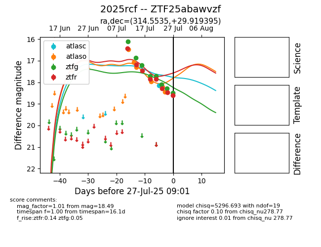

Target 2025rcf at 2025-07-27 09:01, see:
FINK: fink-portal.org/2025rcf
Lasair: lasair-ztf.lsst.ac.uk/objects/2025rcf
ALeRCE: alerce.online/object/2025rcf
TNS: wis-tns.org/object/2025rcf
YSE: ziggy.ucolick.org/yse/transient_detail/2025rcf
alt names
ZTF25abawvzf (ztf,fink)
2025rcf (tns,yse)
coordinates:
equatorial (ra, dec) = (314.5535,+29.91940)
galactic (l, b) = (74.3923,-10.24356)
photometry
last atlasc=18.13, atlaso=18.44, ztfg=18.49, ztfr=18.60
1 atlasc, 7 atlaso, 8 ztfg, 8 ztfr detections
